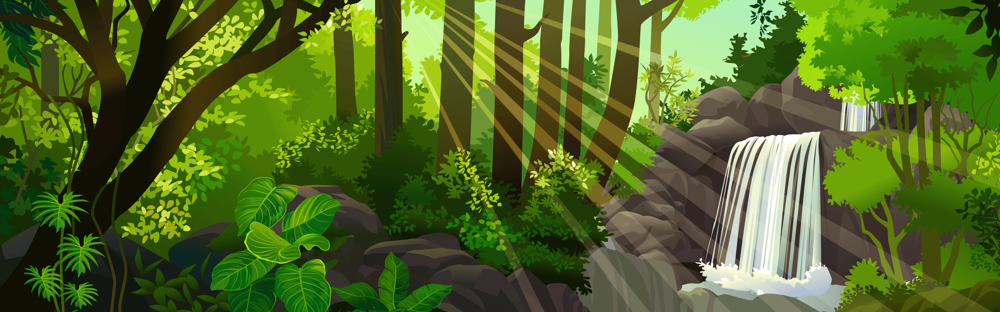

um dia desses, dentro de um livro da biblioteca da escola, eu descobr uma carta antiga antiga sobre uma cidade perdida, escondida por riquezas e belezas naturais. Nessa carta, a autora deixa algumas pistas para encontrar essa cidade, e eu decidi segui-las !
Você começa sua jornada, subindo o pico da Tijuca ao amanhecer pra entrar a primeira pista.